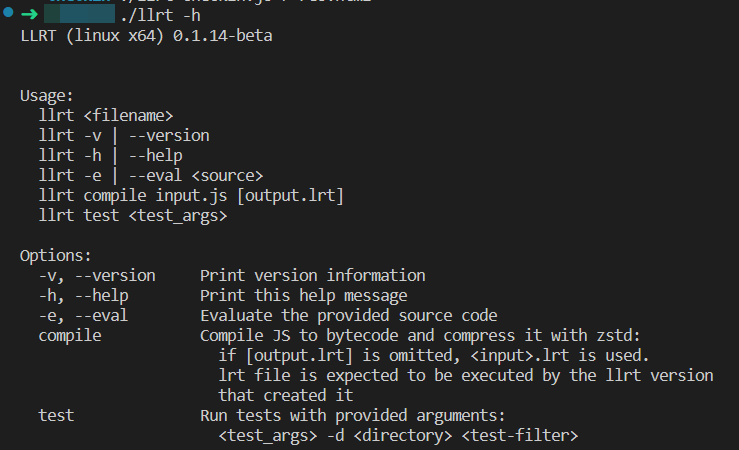
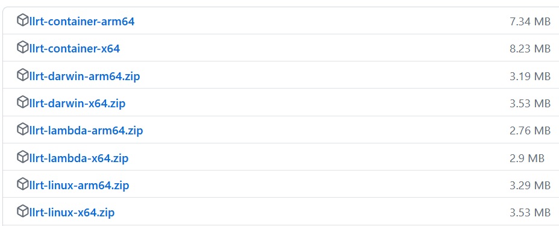
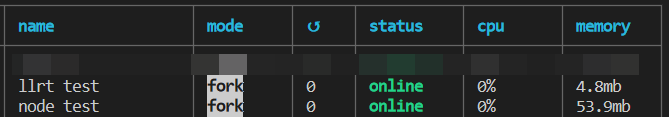

llrt
让人感到兴奋的serverless js 运行时：
github.com/awslabs/llrt
js 用来写一些小的脚本是十分方便与快速的，但每次当我使用js与go比较时我常常为程序所占用的内存而自卑，一个非常简单的js脚本都要占用六七十兆的内存，而我最常接触的思源笔记，它的核心程序是使用go编写的，内存占用也只有七十多兆。
现在我发现了
llrt
！ ，现在只要 6MB 不到的内存就可以运行起一个简单的js脚本了。
它使用 QuickJs 作为引擎， Rust 实现所有 JavaScript API。（目前支持这些api：
buffer
child_process
console
crypto
events
fetch
fs
fs/promises
hex
module
os
path
timers
url
URLSearchParams
util
uuid
xml
net
）

llrt 命令文档
使用方式也非常简单，去
https://github.com/awslabs/llrt/releases
下载 llrt

在同样执行下面这段简单代码的情况下，llrt 和 node 的占用如下图
js
setInterval(() => { console.log(new Date()); }, 1000);
